Resolución de circuitos¶
En esta unidad vamos a estudiar cómo resolver circuitos con resistencias para hallar las corrientes y tensiones que circulan por ellas.
Índice de contenidos:
Leyes y fórmulas utilizadas¶
Las ecuaciones que vamos a utilizar para conseguir resolver los circuitos son la ley de Ohm y las leyes de los circuitos en paralelo y en serie.
También podemos utilizar las fórmulas, que ya hemos estudiado, de las resistencias equivalentes a un circuito en serie y a un circuito en paralelo.
- Fórmulas de la ley de Ohm
- Leyes del circuito en serie
- La corriente que circula por varias resistencias en serie es la misma para todas ellas.
- La tensión total de un circuito en serie es igual a la suma de las tensiones de cada una de sus resistencias.
- Leyes del circuito en paralelo
- La corriente total que circula por varias resistencias en paralelo es igual a la suma de las corrientes que circulan por las resistencias.
- La tensión de cada una de las resistencias que están en paralelo es la misma para todas ellas.
- Resistencia equivalente a un circuito en serie
- Resistencia equivalente a un circuito en paralelo
Cada uno de los circuitos que vamos a analizar tendrá asociada una cuadrícula con la tensión, la intensidad de corriente y la resistencia de cada componente. Esa cuadrícula habrá que rellenarla con las soluciones que vamos obteniendo al aplicar las fórmulas anteriores, hasta que toda la cuadrícula esté completa y conozcamos todos los valores del circuito.
Divisor de tensión con dos resistencias¶
Este circuito es muy usado en electrónica para conseguir tensiones más bajas que la tensión de alimentación. Consiste en dos resistencias conectadas en serie entre sí y a los dos terminales de la alimentación.
Si tenemos un circuito con una tensión de alimentación de 5 voltios y necesitamos una tensión de 3 voltios, el divisor de tensión es la forma más sencilla de conseguirlo.
En la siguiente imagen podemos ver el circuito divisor de tensión.
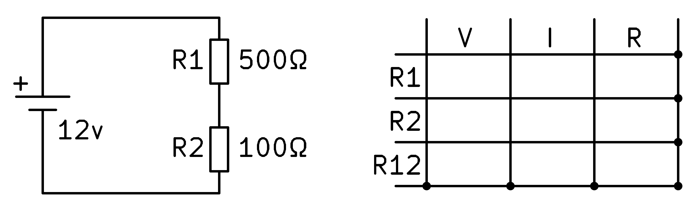{kind=link}
Para resolver el circuito comenzamos escribiendo en la tabla los valores de las resistencias que conocemos, R1 y R2.
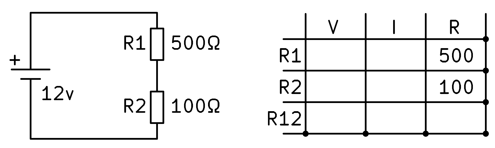{kind=link}
A continuación escribimos en la tabla los valores de tensión que conocemos, que en este caso será la tensión total de las dos resistencias R1 y R2 en serie, que coincide con la tensión de la pila.
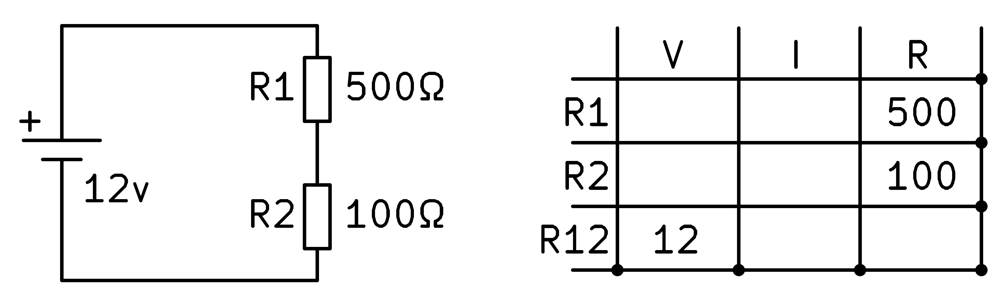{kind=link}
Ahora debemos buscar si se puede solucionar alguna cuadrícula con las fórmulas que conocemos. La resistencia total R12 se puede calcular con la fórmula de las resistencias en serie, es decir, sumando las dos resistencias.

Para continuar, en la última fila tenemos la tensión y la resistencia por lo que podemos hallar la intensidad con la ley de Ohm. Dividiendo la tensión entre la resistencia obtenemos 20 mili amperios de corriente.
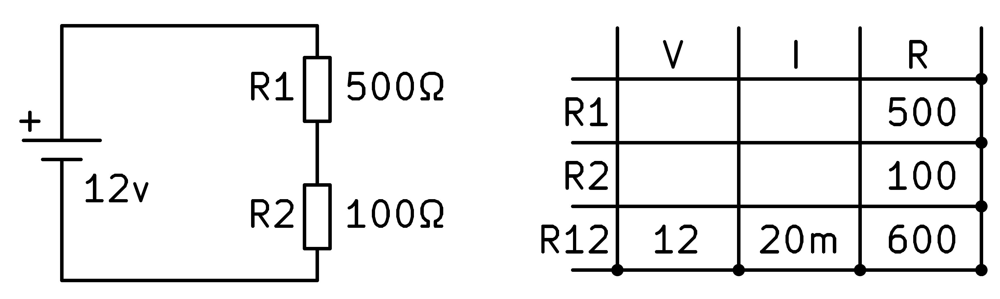{kind=link}
Ahora podemos aplicar la ley de los circuitos en serie que dice que la corriente será la misma por todos los componentes del circuito.
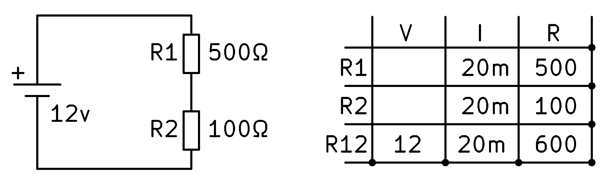{kind=link}
Para terminar, con la ley de Ohm podemos hallar las tensiones en cada una de las resistencias multiplicando la corriente por la resistencia.
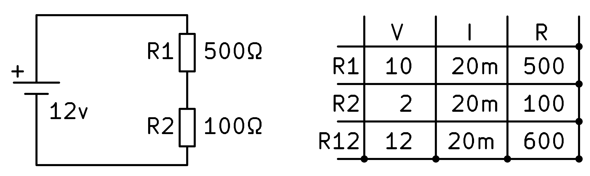{kind=link}
Y el circuito está resuelto por completo.
La tensión de la resistencia R2 será igual a 2 voltios, una tensión menor que la tensión de alimentación porque este circuito ha dividido la tensión de alimentación entre 6.
Divisor de tensión con dos resistencias desconocidas¶
En este apartado vamos a resolver un circuito en serie en el que no conocemos el valor de las resistencias, solo conocemos la corriente que circula por el circuito (10mA) y la tensión que queremos obtener en R2 (9V).
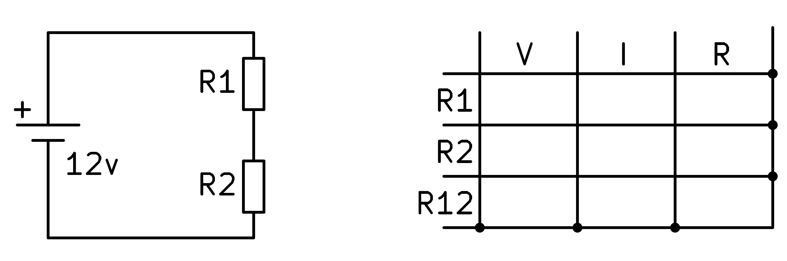{kind=link}
Comenzamos por rellenar la tabla con los valores que conocemos del circuito.

A continuación podemos calcular la resistencia total R12 aplicando la ley de Ohm.
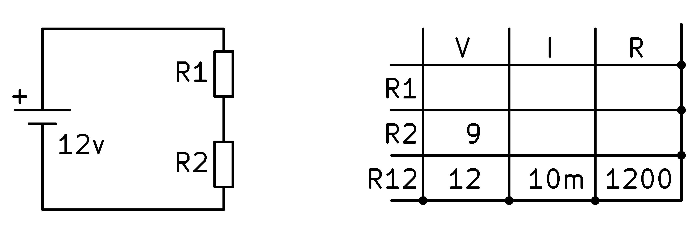{kind=link}
Para poder continuar, aplicamos la ley de los componentes en serie que dice que la corriente por todos los elementos del circuito es la misma.
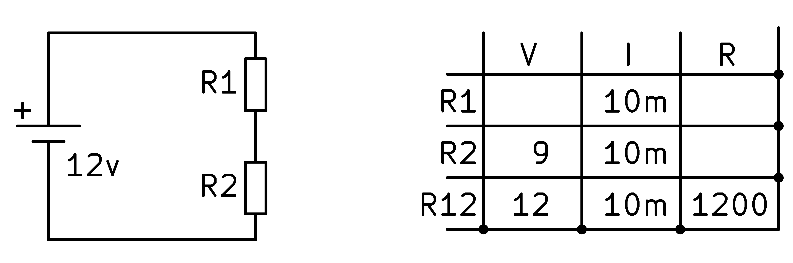{kind=link}
Ahora podemos aplicar de nuevo la ley de Ohm a la segunda resistencia para hallar su valor.

En este punto podemos continuar aplicando la ley de los circuitos en serie que dice que la tensión total de las resistencias es igual a la suma de las tensiones en cada resistencia.
Es decir: V_R1 + V_R2 = 12v -> V_R1 = 12v - 9v = 3v
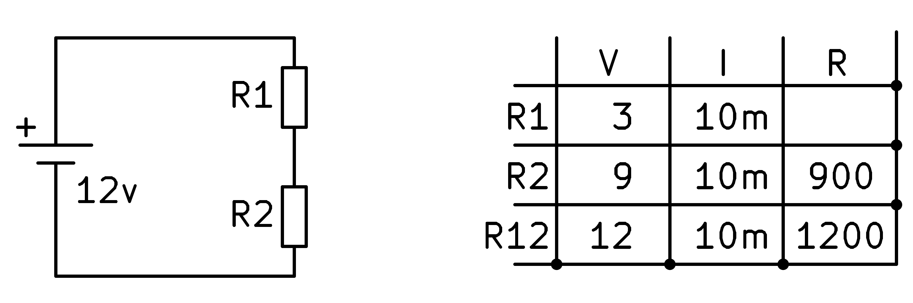{kind=link}
Para terminar, aplicamos la ley de Ohm a la primera resistencia y hallamos su valor.

En esta última casilla también podríamos haber aplicado la fórmula del equivalente de las resistencias en serie. Sabiendo que R1 + R2 = R12, se puede calcular fácilmente que R1 debe valer 300 Ohmios.
Circuito mixto serie-paralelo¶
En este apartado vamos a resolver un circuito mixto, con conexiones serie y paralelo, en el que conocemos el valor de todas las resistencias.
Comenzamos por copiar en la tabla los valores de resistencia y tensión que ya conocemos.
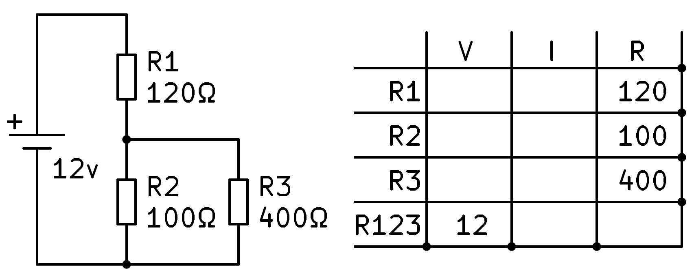{kind=link}
A partir de aquí no tenemos datos para resolver ninguna de las tres primeras filas. La primera tarea será calcular la resistencia equivalente de las tres resistencias del circuito.
Primero hallamos el paralelo de 100 Ohmios y de 400 Ohmios que nos da un resultado de 80 Ohmios.
A continuación calculamos el equivalente en serie de la resistencia R1, con 120 Ohmios, y del resultado anterior, 80 Ohmios. Sumando ambos nos da un resultado total de 200 Ohmios, que podemos escribir en el hueco correspondiente a la resistencia R123.

Ahora podemos aplicar la ley de Ohm a la cuarta fila para hallar la intensidad total que circula por el circuito, 60 miliamperios.
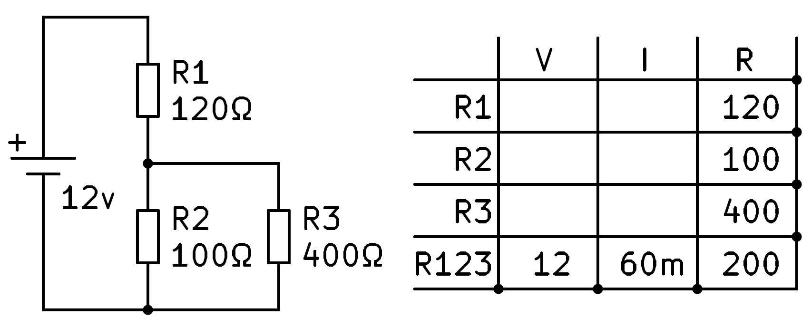{kind=link}
Toda la corriente que circula por el circuito circulará por R1 al estar en serie. Con este dato podemos rellenar la corriente de R1 copiando la corriente total.
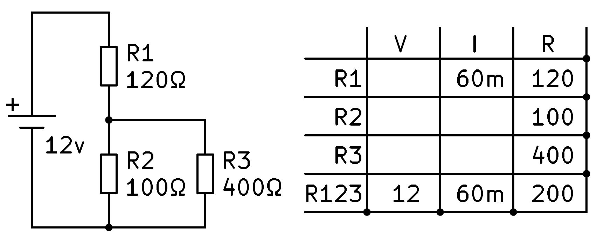{kind=link}
En este punto podemos aplicar la ley de Ohm a la primera fila para calcular la tensión en la resistencia R1.
{kind=link}
La tensión total de la pila, 12v, será igual a la suma de las tensiones de las dos ramas en serie del circuito, R1 y R23.
Despejando tenemos que la tensión en las resistencias R2 y R3 es de 12v - 7.2v = 4.8v, que podemos escribir en las casillas correspondientes.
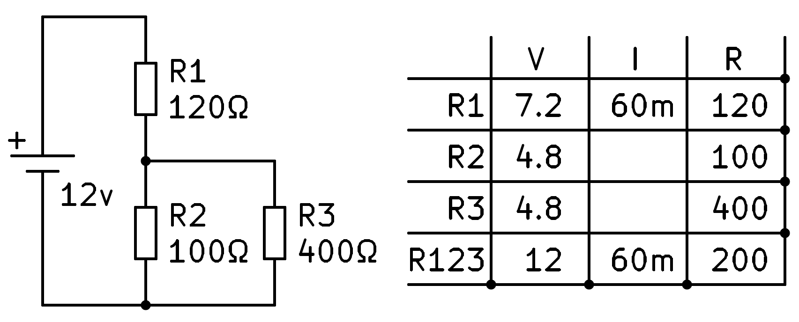{kind=link}
Ahora podemos aplicar la ley de Ohm a la segunda y tercera filas para terminar de calcular los valores de intensidad que aún no conocemos.
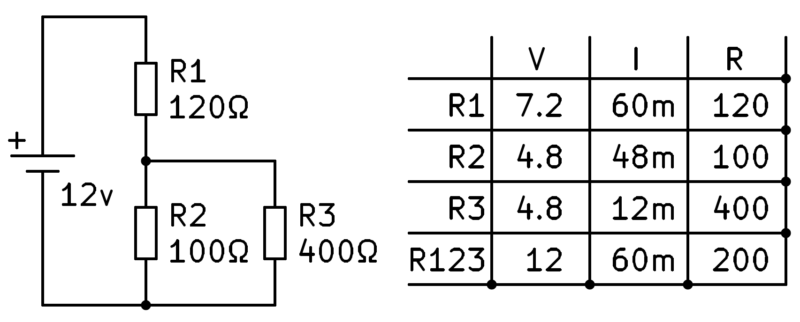{kind=link}
Para terminar comprobaremos que la suma de las corrientes en R2 y en R3 es igual a la corriente total que circula por el circuito.
Cuestionarios¶
Cuestionarios sobre resolución de circuitos.